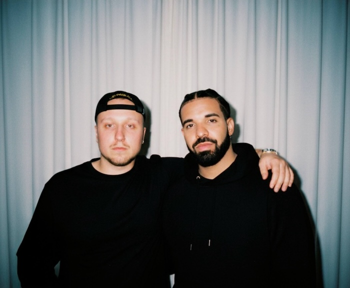

Общая информация о T-Fest

Кратко об артисте:
- Настоящее имя: Кирилл Незборецкий (T-Fest).
- Музыкальный стиль: хип-хоп, рэп, альтернативный поп.
- Основные релизы: «Молодость ‘97», «Иностранец», «Цвети либо погибни», «Выйди и зайди нормально» и др.
- Сотрудничество: работа с лейблом Gazgolder и другими артистами.
- Язык текстов: преимущественно русский.
Особенности творчества T-Fest:
- Комбинация мелодичного вокала и рэпа.
- Темы песен: молодость, любовь, одиночество, поиск себя.
- Современное звучание: new-school, электронные элементы, атмосферные биты.
- Активные живые выступления и фестивали.
- Интересная визуальная часть: клипы, лайвы и документальные проекты.